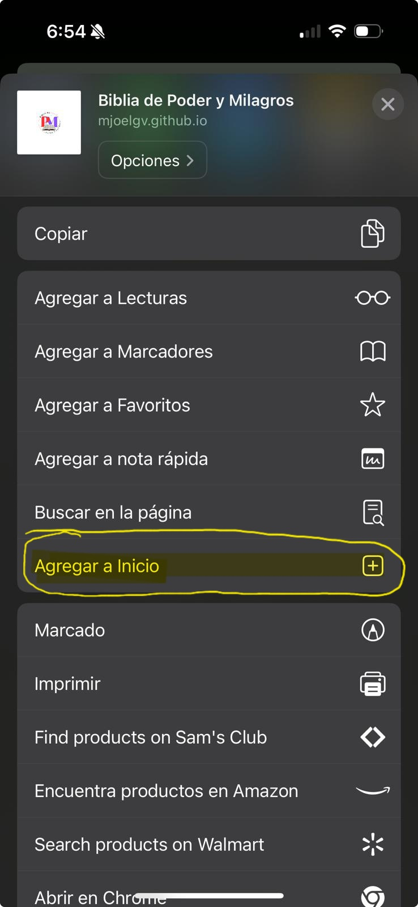
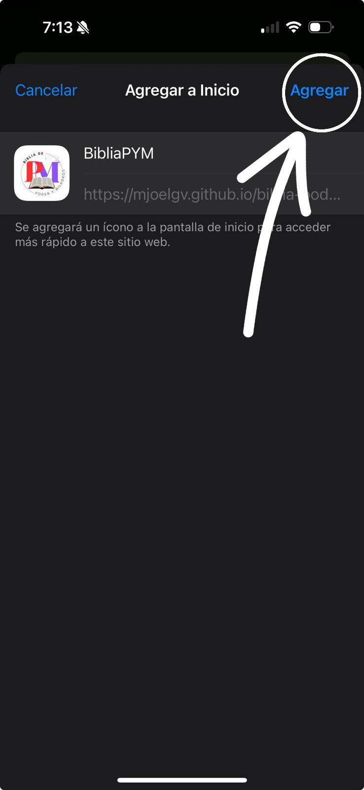
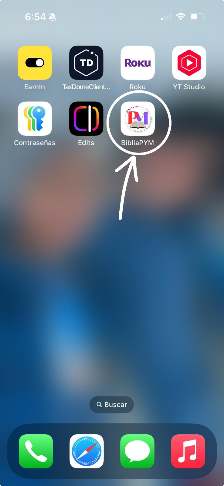

Bienvenido
Juan 1
Toca el botón Compartir (el cuadro con una flecha hacia arriba) en la parte de abajo de Safari.
Desliza hacia arriba y elige Agregar a inicio.

Toca Agregar arriba a la derecha.

¡Listo! El ícono aparecerá en tu pantalla de inicio.
